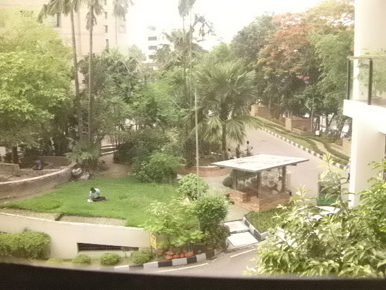
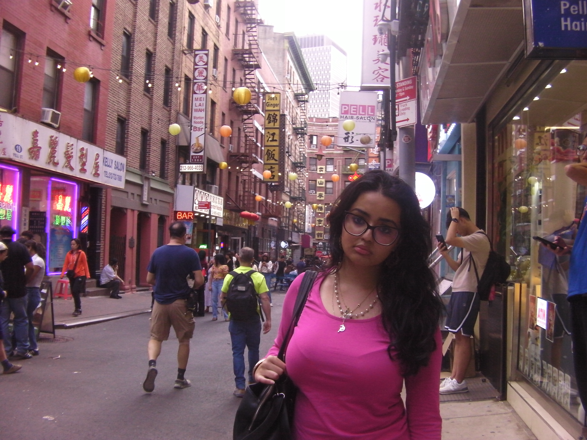
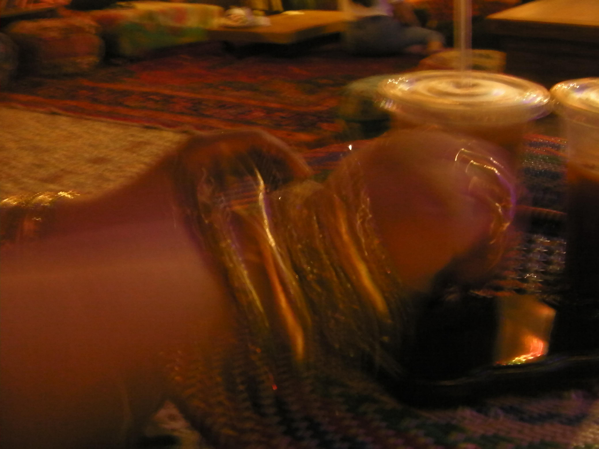
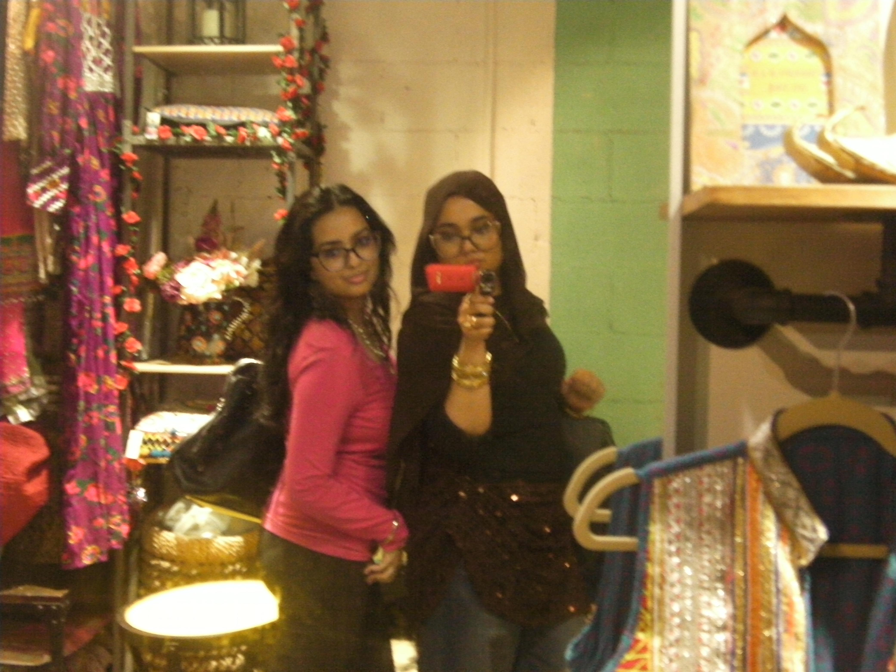
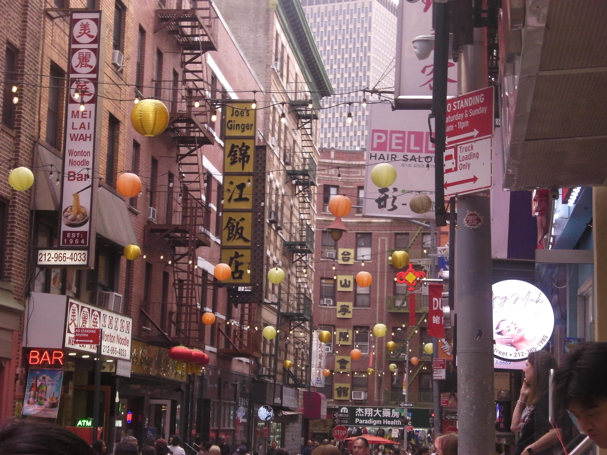

SANYOXACTI CG88
My dad gifted me a red Sanyo Xacti-CG88 that he bought when he was younger!
WITH LOVE
♥
Why this
little thing.
I always loved digital cameras butttttt. . . I really did not feel like buying a new one -- even with my big girl money. I was quite happy with my phone camera, I mean I had various filters at my arsenal -- what more could I wish for? I was using apps such as Dazzcam and even my phone's native camera filtering features, and I was very content with them. If anything, it made me like my phone even more because someone from 1723 would definitely faint looking at the witchcraft I am doing with this glowing, black box.
Of course, seeing everyone hop on the trend of purchasing a digicam did kind of sway my feelings since I, admittedly, am a trendhopper. However, taking one look at the prices and looking at what I could buy instead changed my mind. I would sigh sometimes whenever I would see my homegirls posting chic going out photos, because they looked so, so, so good. It wasn't even the pictures, it was just the experience of taking the photos. Like holding this little box that is barely the size of your palm -- it is so cute. . . so stylish. Whatever, a girl could dream.
I remember talking about this with my baba (dad) over the phone when we were Facetiming. I was telling him, jokingly, that everyone nowadays prefers the more "vintage" look to photos and have started purchasing digital cameras. He was confused. Very, very confused. He could not wrap his head around it, honestly. It was really funny, and to be honest, kind of valid? Oh well. Anyways. He then told me that he actually owns a digital camera. Although it is old, like 15-years-old, she still works fine because my baba is a very Type A man and meticulously takes care of his belongings. He showed the camera to me and I fell in LOVE.
When I went back home to Bangladesh for summer break, he actually gifted the camera to me. I was so ecstatic that I started taking photos ASAP. Here is a photo I actually took outside of my home:

This is only the beginning of how I want to capture the world. This camera is now going to journey with me everywhere, from Bangladesh to building my life here, in the States and everywhere else -- wherever life takes me. Below is a gallery of some of my most cherished moments, starting this semester with my lovely friends.
GALLERY !
♡♡♡



